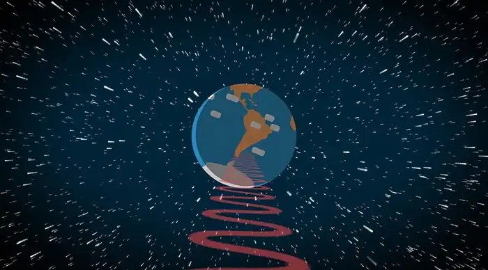
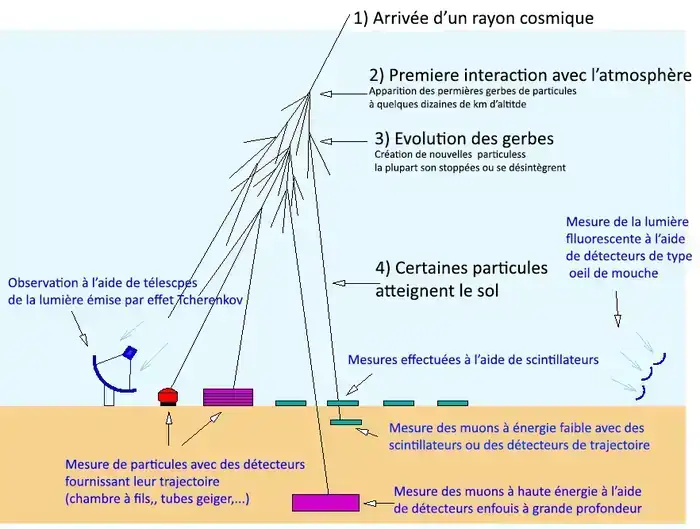
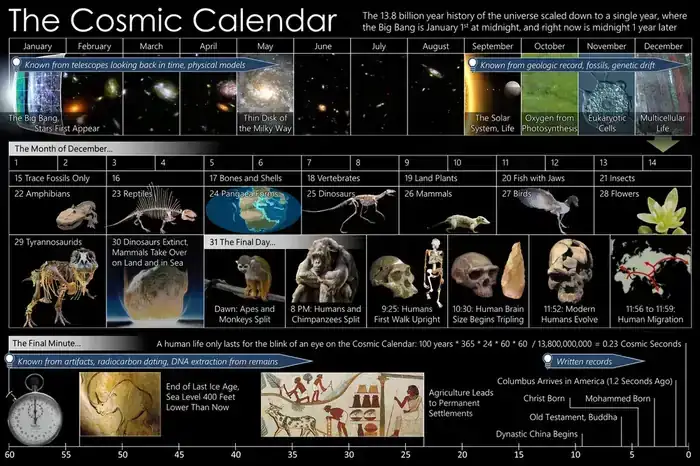

The model
The ekpyrotic model, proposed by Paul Steinhardt and Neil Turok in 2001, places the visible universe on one of two branes in a higher-dimensional bulk. The branes approach, collide, and the collision appears to us as a hot Big Bang; the process can repeat, producing a cyclic universe.
Maps, diagrams and images






The test
The motivation was to explain the same puzzles inflation explains — flatness, homogeneity — without an inflaton field. The two models differ in their predictions for primordial gravitational waves and for non-Gaussianity in the microwave background. Planck's measurements have constrained both, and the simplest ekpyrotic models are under pressure, while variants survive.
The debate is technical and unresolved. Inflation remains the majority view, partly because it has more free parameters with which to accommodate the data.
Documented: the model and its predictions.
Constrained: by Planck's non-Gaussianity limits.
Contested: whether any version survives comfortably.
Not excluded: the class of models.
The honest label: live debate.
Why it is in the archive
Because it is a serious rival to the standard account, and because the argument between them is about predictions rather than about evidence for either.
Open resources on this topic
- BookThe primordial curvature perturbation in the ekpyrotic Universe — David H. Lyth · 2001 (Internet Archive, free to read)
- BookOn the Spectrum of Fluctuations in an Effective Field Theory of the Ekpyrotic Universe — ['R. Brandenberger', 'F. Finelli'] · 2001 (Internet Archive, free to read)
- BookClarifying perturbations in the ekpyrotic universe (Internet Archive, free to read)
- PapersOpen-access articles: DOAJ · PubMed Central · Internet Archive Scholar
- BooksPublic-domain and borrowable copies: Open Library · Project Gutenberg · Google Books
Cite this page
Momin, S. (2026). The Ekpyrotic Universe. The Larger World Archive. https://drsamonline.github.io/LARGE_GLOBE/ekpyrotic-universe.htmlMomin, Sohil. “The Ekpyrotic Universe.” The Larger World Archive, 2026, https://drsamonline.github.io/LARGE_GLOBE/ekpyrotic-universe.html.Momin, Sohil. “The Ekpyrotic Universe.” The Larger World Archive, 2026. https://drsamonline.github.io/LARGE_GLOBE/ekpyrotic-universe.html.@misc{the2026ekpyrotic,
author = {Momin, Sohil},
title = {The Ekpyrotic Universe},
year = {2026},
howpublished = {The Larger World Archive},
url = {https://drsamonline.github.io/LARGE_GLOBE/ekpyrotic-universe.html},
note = {Last reviewed 20 November 2026}
}Last reviewed 20 November 2026 · Corrections policy · this page is not peer reviewed
Sources for this page
- Wikipedia, “Ekpyrotic universe” — the modelen.wikipedia.org
- Wikipedia, “Brane cosmology” — the frameworken.wikipedia.org
- Wikipedia, “Cosmic inflation” — the rivalen.wikipedia.org
- Wikipedia, “Non-Gaussianity” — one of the testsen.wikipedia.org